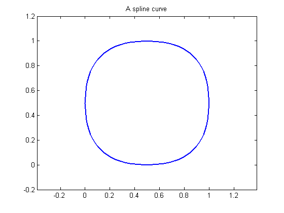
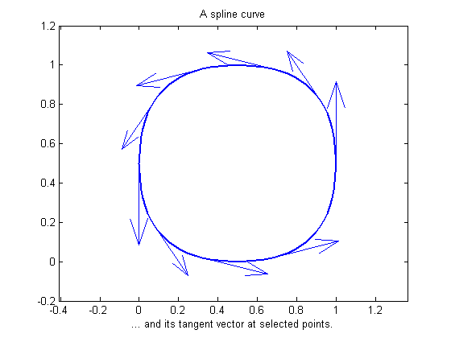
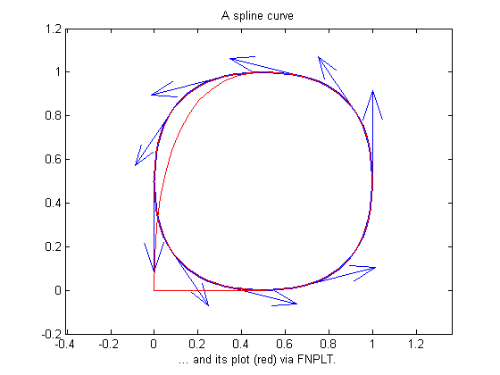
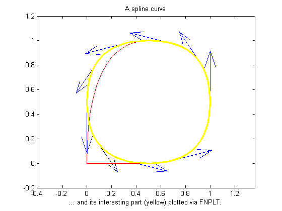
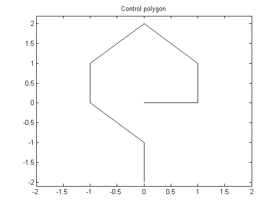
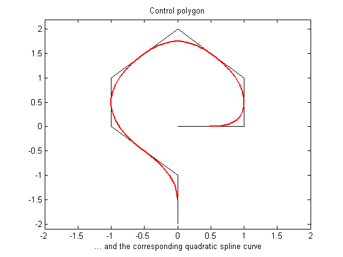
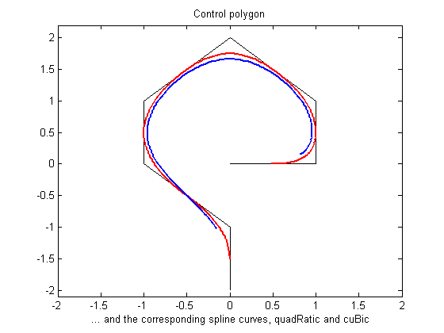
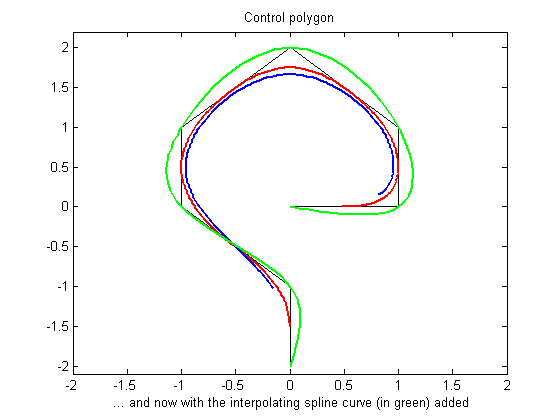
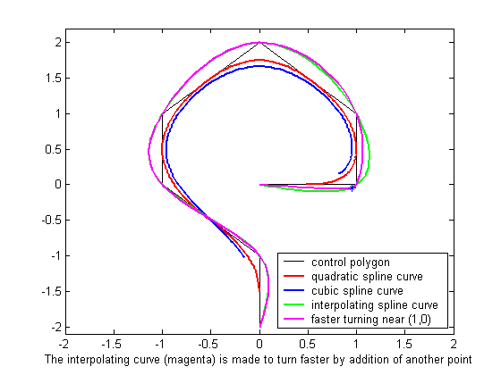

More Spline Curves
Use of SPMAK, SPCRV or CSCVN to generate spline curves.
Copyright 1987-2003 C. de Boor and The MathWorks, Inc. $Revision: 1.2 $
Overview
The Spline Toolbox can handle v e c t o r - v a l u e d splines. A d-vector valued univariate spline provides a curve in d-space. In this mode, d = 2 is most common, as it gives plane curves.
Here is an example, in which a spline with 2-dimensional coefficients is constructed and plotted.
knots = [1,1:9,9]; curve = spmak( knots, repmat([ 0 0; 1 0; 1 1; 0 1 ], 2,1).' ); t = linspace(2,8,121); values = fnval(curve,t); plot(values(1,:),values(2,:),'linew',2) axis([-.2 1.2 -.2 1.2]), axis equal, grid off title('A spline curve')
We also draw the tangent vector to the curve at some points.
t = 3:.4:6.2; lt = length(t);
cv = fnval( curve, t );
cdv = fnval( fnder(curve), t );
hold on
quiver(cv(1,:),cv(2,:), cdv(1,:),cdv(2,:))
xlabel('... and its tangent vector at selected points.')
hold offYou may have noticed that, in this example, I did not use FNPLT to plot the curve, but instead plotted some point on the curve obtained by FNVAL: t = linspace(2,8,121); values = fnval(curve,t); plot(values(1,:),values(2,:),'linew',2) Using FNPLT directly with this particular curve gives the red curve above. The explanation? The spline is of order 4, yet the end knots in the knot sequence knots = [1,1:9,9]; have only multiplicity 2. Therefore, all the B-splines of order 4 for this knot sequence are 0 at the endpoints of the basic interval. This makes the curve start and stop at (0,0).
hold on fnplt(curve,'r',.5) xlabel('... and its plot (red) via FNPLT.') hold off
Since, in this case, we are really interested only in the curve segment corresponding to the parameter interval [2 .. 8], we can use FNBRK to extract that part, and then have no difficulty plotting it with FNPLT:
mycurve = fnbrk(curve,[2 8]); hold on, fnplt(mycurve,'y',2.5) xlabel('... and its interesting part (yellow) plotted via FNPLT.'), hold off
I use spline curves extensively in the generation of illustrations in which nothing more than a smooth curve of a certain roughly imagined shape is required. For this, the toolbox contains a special M-file called SPCRV which is independent of the rest of the setup. Given a sequence of points in the plane and, optionally, an order k , it generates (by repeated midpoint knot insertion) the spline curve (of order k ) whose control polygon is specified by the given sequence. The above picture shows such a control polygon. The next slide shows the corresponding spline curve of order 3.
points = [0 0; 1 0; 1 1; 0 2; -1 1; -1 0; 0 -1; 0 -2].'; plot(points(1,:),points(2,:),'k'), axis([-2 2 -2.1 2.2]), grid off title('Control polygon')
... and corresponding spline curve
We have added the corresponding spline curve of order 3 provided by SPCRV.
hold on values = spcrv(points,3); plot(values(1,:),values(2,:),'r','linew',1.5) xlabel(' ... and the corresponding quadratic spline curve')
You notice that the curve touches each segment of the control polygon at its midpoint, and follows the shape outlined by the control polygon.
Raising the order k will pull the curve away from the control polygon and make it smoother, but also shorter. Here we added the corresponding spline curve of order 4.
value4 = spcrv(points,4); plot(value4(1,:),value4(2,:),'b','linew',2) xlabel(' ... and the corresponding spline curves, quadRatic and cuBic')
On the other hand, the command CSCVN provides an interpolating curve. Here is the resulting parametric `natural' cubic spline curve:
fnplt( cscvn(points), 'g',1.5 ) xlabel(' ... and now with the interpolating spline curve (in green) added')
By adding the point (.95,-.05) near the second control point, (1,0), we can make this curve turn faster there:
[d,np] = size(points); fnplt( cscvn([ points(:,1) [.95; -.05] points(:,2:np) ]), 'm',1.5) xlabel(['The interpolating curve (magenta) is made to ',... 'turn faster by addition of another point']) plot(.95,-.05,'*') legend('control polygon','quadratic spline curve','cubic spline curve',... 'interpolating spline curve','faster turning near (1,0)',4) title('') hold off